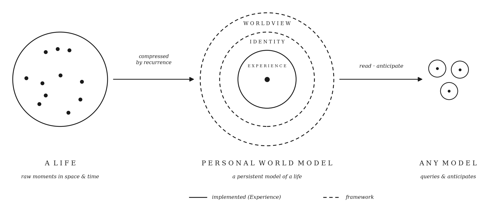
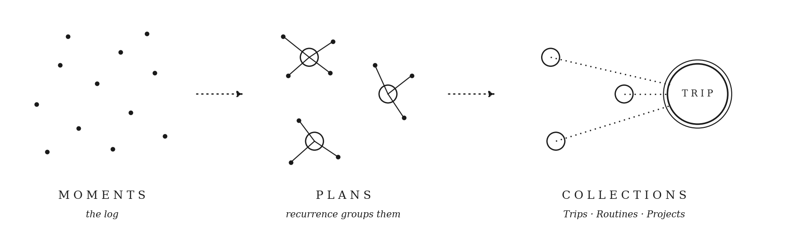
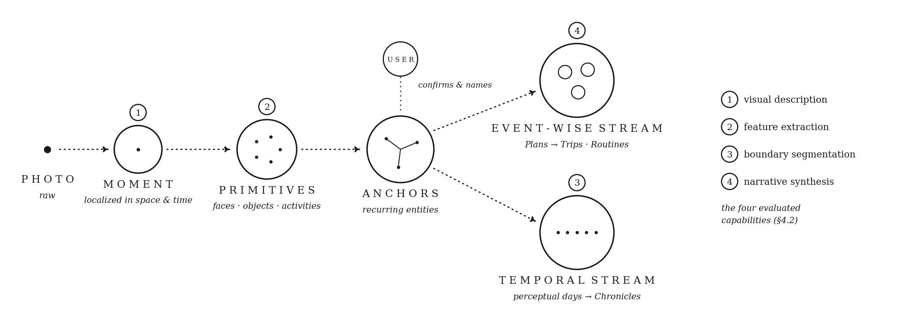

Personal World Models

Abstract
Memory is a compression problem. Current systems treat it as retrieval, which can say what happened but not what it means or what comes next. We introduce the Personal World Model (PWM): a life compressed the way a map compresses territory — what recurs becomes structure, and any model can read the structure and anticipate from it. GOLGI instantiates the framework: it ingests a real four-week photo archive, 720K tokens of raw life, into anchored entities, routines, and narratives an agent traverses in hundreds of tokens, on a pipeline that runs end-to-end on 4B on-device models. The agent reading the structure answers personal-history questions better than one searching the raw archive; corrupt the structure and the advantage collapses; the same structure predicts moments it never observed. Built once, read by any model, owned by the person.
Earned by recurrence
Moments arrive as an undifferentiated log. Recurrence and proximity group them into Plans; recurring and related Plans aggregate into Collections — Trips, Routines, Projects. The abstraction is computed once, at ingestion, and persisted — the structure an agent traverses to answer a question is measured in hundreds of tokens while the raw archive grows without bound.

The pipeline
A photo enters as a Moment; Primitives (faces, objects, activities, spaces, text) are extracted per moment; recurring Primitives are promoted to Anchors with user confirmation; the anchored stream is synthesized into Narratives along an event-wise and a temporal stream. Agents read the committed structure through MCP. Every stage runs on-device at 4B scale, at up to 82% end-to-end parity with a cloud reference.

What the structure buys
Fifty personal-history questions over the same archive, one fixed answer model, one fixed judge — only the memory layer varies:
| Memory layer | Correctness |
|---|---|
| GOLGI | 46 |
| GraphRAG | 30 |
| Supermemory | 29 |
| Matched flat-retrieval control | 19 |
| Flat retrieval (vanilla) | 17 |
| Mem0 | 15 |
| Zep | 6 |
- The benefit is causal: corrupting the structure degrades answers in step with its fidelity (r = 0.81 across 36 corrupted variants); random groupings of the same shape give the agent almost nothing.
- The same structure anticipates: the exact masked, unseen moment is retrieved 32% of the time where a structure-free baseline reaches 0% and chance is under 1% — replicating across a second encoder and a second subject.
- Reproduce it on your own camera roll: the released package ingests a photo directory fully on-device (Ollama) or in cloud mode (Gemini), and the supplement releases the stage prompts, judge rubrics, configurations, and benchmark harness.
BibTeX
@misc{azab2026pwm,
title = {Personal World Models},
author = {Azab, Hana and Benavente, Mar\'ia},
year = {2026},
url = {https://personalworldmodels.github.io}
}
0 1 2 3 4 5 6 7 8 9 10 11 12 13 14 15 16 17 18 19 20 21 22 23